遅延を持つ制御システムの解析
目次
遅延を持つプロセスの制御
多くのプロセスでは、輸送遅延や時間ラグとも呼ばれるむだ時間が発生します。遅延は制御帯域を制限し、閉ループの安定性に影響する線形位相シフトを発生させるため、このようなプロセスを制御することは困難です。
状態空間表現を使用すると、遅延を持つ制御システムに対して正確な開ループ モデルまたは閉ループ モデルを作成し、近似なしでその安定性や性能を解析できます。モデルを組み合わせた場合、"内部" 遅延は状態空間 (SS) オブジェクトによって自動的に追跡されます。詳細は、「むだ時間の指定」チュートリアルを参照してください。
このチュートリアルでは、Control System Toolbox™ を使用して、遅延を持つ制御システムを解析および設計する方法を説明します。
例: むだ時間を持つ PI 制御ループ
次の標準的な設定値追従ループを考えてみます。

ここで、プロセス モデル P には 2.6 秒のむだ時間があり、補償器 C は PI コントローラです。
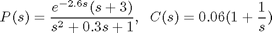
これら 2 つの伝達関数は、次のように指定できます。
s = tf('s');
P = exp(-2.6*s)*(s+3)/(s^2+0.3*s+1);
C = 0.06 * (1 + 1/s);
閉ループ応答を解析するには、ysp から y への閉ループ伝達のモデル T を作成します。このフィードバック ループには遅延が存在するため、P および C は状態空間に変換し、解析に状態空間表現を使用しなければなりません。
T = feedback(ss(P*C),1)
a =
x1 x2 x3
x1 -0.36 -1.24 -0.18
x2 1 0 0
x3 0 1 0
b =
u1
x1 0.5
x2 0
x3 0
c =
x1 x2 x3
y1 0.12 0.48 0.36
d =
u1
y1 0
(すべての内部遅延がゼロに設定された状態で値を計算)
内部遅延: 2.6
連続時間モデル。
結果は、2.6 秒の内部遅延を持つ 3 次モデルになります。内部では、遅延が他のダイナミクスとどのように連動するかが状態空間オブジェクト T によって追跡されます。この構造情報はユーザーには示されず、上の表示は遅延がゼロに設定されている場合の A、B、C、D の値のみを示します。
STEP コマンドを使用して、ysp から y への閉ループ ステップ応答をプロットします。
step(T)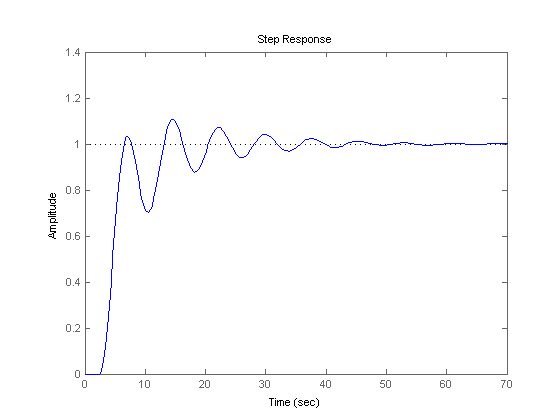
閉ループの振動は、開ループ応答 P*C で見られるように、弱いゲイン余裕が原因です。
margin(P*C)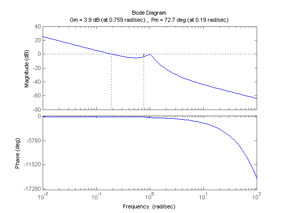
閉ループ周波数応答には共振も見られます。
bode(T)
grid, title('Closed-loop frequency response')

設計を改善するには、1 rad/s 付近の共振点にノッチ フィルターを適用します。
notch = tf([1 0.2 1],[1 .8 1]); C = 0.05 * (1 + 1/s); Tnotch = feedback(ss(P*C*notch),1); step(Tnotch), grid

むだ時間のパデ近似
多くの制御設計アルゴリズムは、むだ時間を直接取り扱うことができません。一般的な回避策は、パデ近似 (オールパス フィルター) によって遅延を置き換えることです。この近似は低周波数でのみ有効であるので、真の応答と近似の応答を比較し、正しい近似の次数を選択して近似の正しさを確認することが重要です。
PADE コマンドを使用して、遅延を持つ LTI モデルのパデ近似を計算します。上記の PI 制御例では、正確な閉ループ応答 T を、遅延の 1 次のパデ近似に対して得られた応答と比較できます。
T1 = pade(T,1); step(T,'b',T1,'r',100) grid, legend('Exact','First-Order Pade')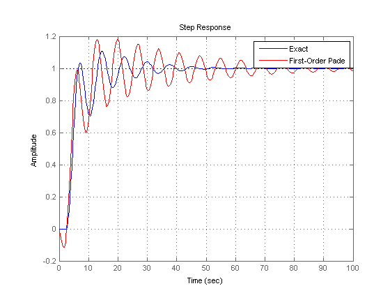
この近似誤差はかなり大きくなります。より良い近似を得るために、遅延の 2 次のパデ近似を試みます。
T2 = pade(T,2); step(T,'b',T2,'r',100) grid, legend('Exact','Second-Order Pade')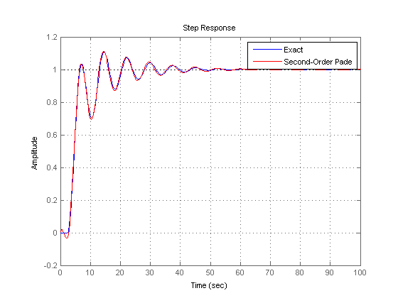
応答は、パデ近似によりもたらされた非最小の位相の結果を除いて、よく一致します。
感度解析
遅延が正確に知られていることはめったにありません。したがって、制御システムが遅延の値に対し、どれほどの感度があるかを理解することが重要な場合がよくあります。そのような感度解析は、LTI 配列と InternalDelay プロパティを使用して簡単に実行できます。
たとえば、上のノッチ PI 制御の感度を解析するには、2.0 ～ 3.0 の範囲の遅延値を持つモデルを 5 つ作成します。
tau = linspace(2,3,5); % 5 delay values Tsens = repsys(Tnotch,[1 1 5]); % 5 copies of Tnotch for j=1:5 Tsens(:,:,j).InternalDelay = tau(j); % jth delay value -> jth model end
次に、STEP を使用して包絡線プロットを作成します。
step(Tsens)
grid, title('Closed-loop response for 5 delay values between 2.0 and 3.0')
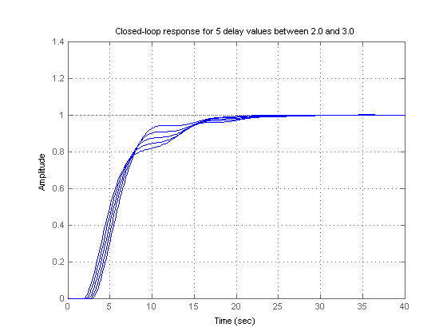 次のプロットは、遅延の値の不確かさは閉ループ特性にほとんど影響しないことを示しています。内部遅延の値を変更できる一方、これはモデル構造の一部なので、存在している数は変更できないことに注意してください。いくつかの内部遅延を除去するには、それらの値をゼロに設定するか、あるいは 0 次の PADE を使用します。
Tnotch0 = Tnotch; Tnotch0.InternalDelay = 0; bode(Tnotch,'b',Tnotch0,'r',{1e-2,3}) grid, legend('Delay = 2.6','No delay','Location','SouthWest')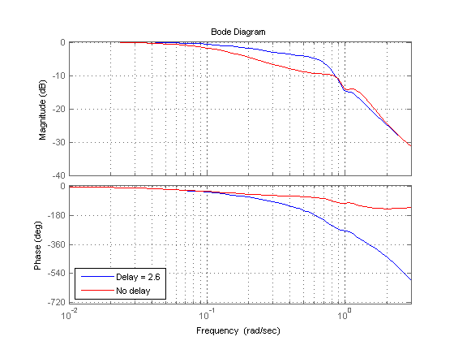
離散化
C2D を使用して、連続時間むだ時間のシステムを離散化できます。利用できるメソッドには、ゼロ次ホールド (ZOH)、1 次ホールド (FOH)、および Tustin があります。内部遅延を持つモデルに対して、ZOH 離散化は必ずしも正確ではありません。つまり、連続および離散化されたステップ応答は一致しません。
Td = c2d(T,1); step(T,'b',Td,'r') grid, legend('Continuous','ZOH Discretization')
警告: 離散化は、初期遅延のため近似のみ行います。離散化誤差が大きい場合は、高速サンプリング レートを使用してください。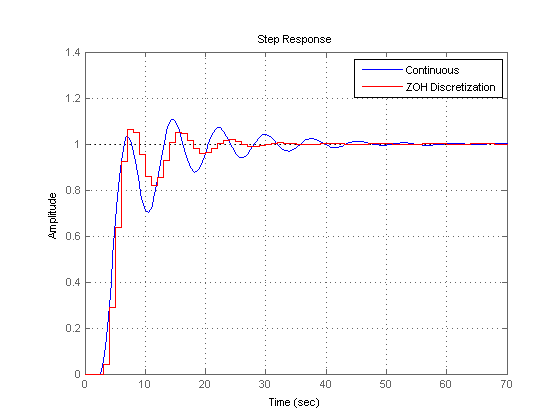
そのような離散化のギャップを訂正するには、連続と離散の応答が一致するまでサンプリング周期を減らします。
Td = c2d(T,0.05); step(T,'b',Td,'r') grid, legend('Continuous','ZOH Discretization')
警告: 離散化は、初期遅延のため近似のみ行います。離散化誤差が大きい場合は、高速サンプリング レートを使用してください。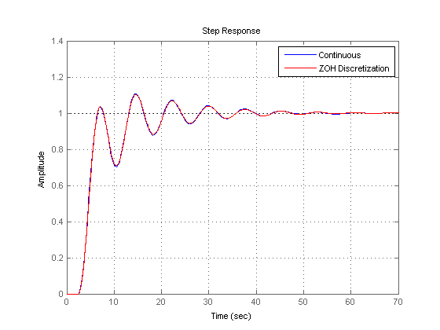
内部遅延は離散化されたモデル内に留まり、モデル次数を上げないことに注意してください。
order(Td) Td.InternalDelay
ans =
3
ans =
52
遅延システムに固有の機能
遅延のない LTI 解析にのみ慣れていると、遅延のあるシステムの時間応答と周波数応答は奇妙に見えます。時間応答は無秩序に動作し、ボード線図はゲインの振動などを示すことがあります。これらの予測できない動作はソフトウェアによるものではなく、このようなシステムの実際の特性です。以下では、これらの現象について少し説明します。
ゲイン リップル:
G = exp(-5*s)/(s+1); T = feedback(ss(G),.5); bodemag(T)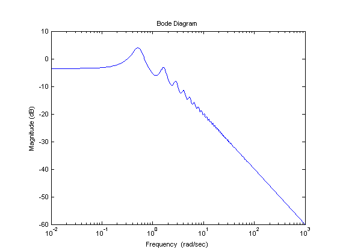
ゲイン振動:
G = ss(1) + 0.5 * exp(-3*s); bodemag(G)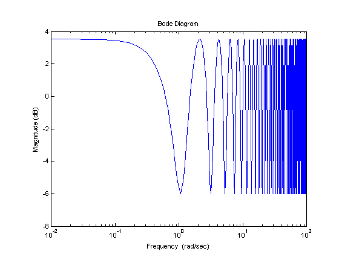
ギザギザのステップ応答 (初期ステップの "エコー" に注目してください):
G = exp(-s) * (0.8*s^2+s+2)/(s^2+s); T = feedback(ss(G),1); step(T)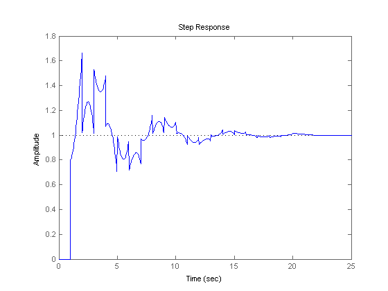
カオス応答:
G = ss(1/(s+1)) + exp(-4*s); T = feedback(1,G); step(T)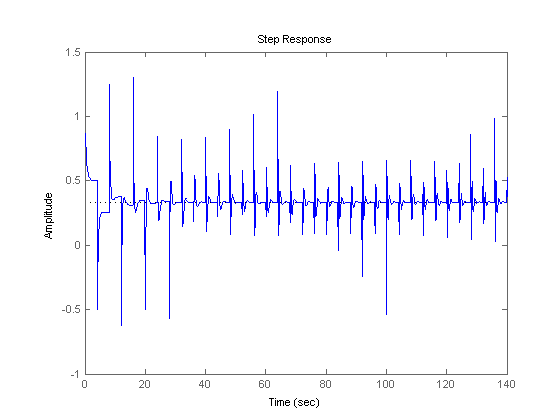